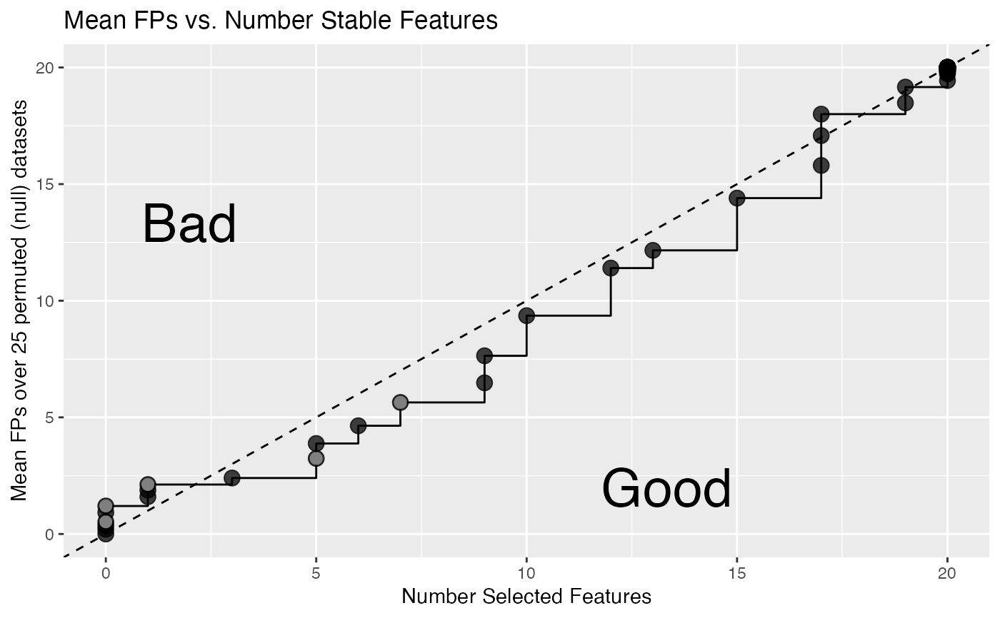
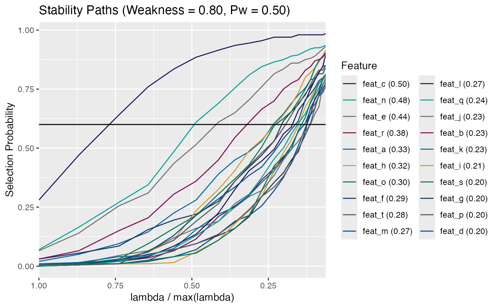

Plot Empirical FDR
plot_emp_fdr.RdPlot the mean number of false positives (FPs) versus the number of selected
features by a sequence of selection probability thresholds. For this to
be possible, the stab_sel object must have permuted
data in order to calculate empirical false discovery rates. The area
in the sub-diagonal represents where more features are added without
a commensurate increase in false positives (Good). The inverse is true
for the super-diagonal, false positives are being included faster
than additional features (Bad). The legend highlights pre-defined
empirical FDR breaks: c(0.5, 1, 2, 3, 5) evaluated to the nearest
threshold cutoff.
Usage
plot_emp_fdr(x, thresh_seq = seq(1, 0.1, by = -0.01))
plot_permuted_data(x, which = NULL, ...)Arguments
- x
A
stab_selclass object generated viastability_selection().- thresh_seq
numeric(n). A sequence in[0, 1]specifying the thresholds to evaluate.- which
integer(1). Which of the null hypothesis permuted stability paths to plot.- ...
Additional arguments passed to
plot.stab_sel().
Functions
plot_permuted_data(): Plot the permutation paths for an object of classstab_sel. These paths are the stability selection paths of thenclass scrambled permutations, i.e. the null.
See also
stability_selection(), get_stable_features()
Other empirical FDR:
calc_emp_fdr(),
calc_emp_fdr_breaks()
Examples
# l1-logistic
withr::with_seed(101, {
n_feat <- 20
n_samples <- 100
x <- matrix(rnorm(n_feat * n_samples), n_samples, n_feat)
colnames(x) <- paste0("feat", "_", head(letters, n_feat))
y <- sample(1:2, n_samples, replace = TRUE)
})
# typically set > 75 permutations
stab_sel <- stability_selection(x, y, "l1-logistic", num_perms = 25,
r_seed = 101, parallel = TRUE)
#> ✓ Using kernel: 'l1-logistic' and 1 core (serial)
plot_emp_fdr(stab_sel)
#> Warning: No shared levels found between `names(values)` of the manual scale and
#> the data's colour values.
#> Warning: No shared levels found between `names(values)` of the manual scale and
#> the data's colour values.

# Plot the permuted data individually
plot_permuted_data(stab_sel, 3L) # choose 3rd permutation
